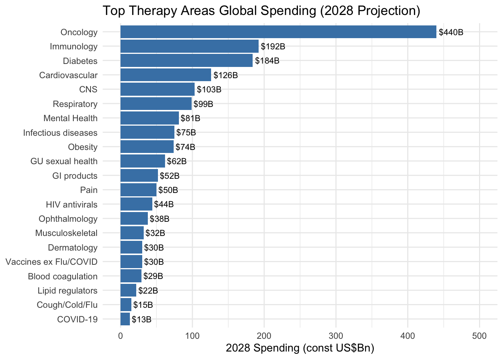
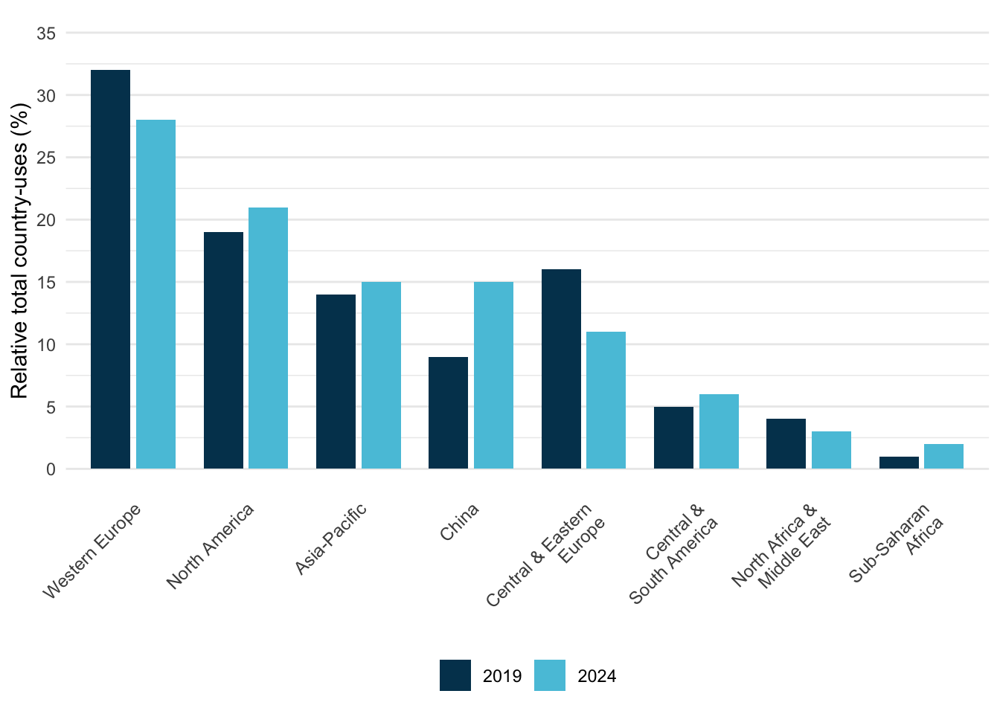
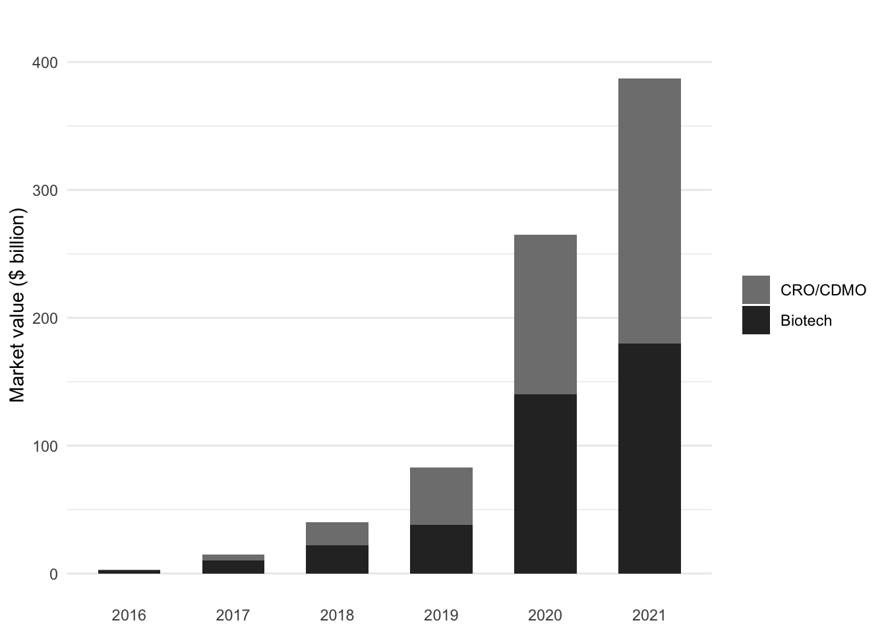

6 Economics of a Trial
Clinical trials are expensive. The pivotal trials behind FDA’s 2015-2016 approvals had a median estimated cost of $19 million, and the costliest, a noninferiority trial with clinical-benefit endpoints, about $350 million (Moore et al. 2018). Bringing a new drug to market, counting the trials that fail along the way, requires an estimated $2.6-2.7 billion per approved drug over 10-15 years (Deloitte’s 2025 cohort average is $2.7B; the Tufts CSDD study’s capitalized estimate is $2.6B) (Deloitte Centre for Health Solutions 2026; DiMasi, Grabowski, and Hansen 2016). Historical success rates ran near 10%. The composite rate was 6% in 2023 and 7% in 2024, the improvement driven by Phase III (IQVIA Institute for Human Data Science 2025).
These economics shape every decision in drug development: which diseases a company pursues, where the trials are run, whether a sponsor builds internal capability or buys it from a CRO, and whether a small biotech partners with a large one or goes it alone. The science does not happen in isolation from the money.
Money enters the system from pharmaceutical and biotechnology sponsors, who fund the vast majority of research and treat each trial as an investment that must yield an approved product and eventually drive revenue. Much of this work is outsourced to Contract Research Organizations (CROs), which provide specialized services ranging from study design to data management in a market Grand View Research put at $59.6 billion in 2025 for healthcare CRO services (Grand View Research 2026), and which are also the largest end users of clinical trial software (Grand View Research 2025). The trials themselves are conducted at clinical sites, hospitals and private practices compensated for their resources and staff time, supported by specialized vendors providing everything from laboratory processing to data capture software. Patients remain the primary participants: often altruistic or hoping for therapeutic benefit, and bearing personal costs (travel expenses, time away from work) that are frequently invisible in formal trial budgets.
6.1 The Cost Structure
In the early 2000s, estimates pegged the total cost of bringing a drug to market at $800 million. Modern analysis paints a starker picture.
Stratospheric R&D Costs
The top 20 biopharma companies spent $7.7 billion on terminated trials for assets that failed during the 2024 analysis cycle alone (Deloitte Centre for Health Solutions 2025). In Deloitte’s 2025 analysis of its cohort, the average cost to develop a drug from discovery to launch rose to $2.67 billion ($2,671 million, up from $2,229 million in 2024), and even that widely cited benchmark often underestimates the full economic burden of modern development (Deloitte Centre for Health Solutions 2026). The Deloitte 2026 report finds a continued rebound in headline productivity, with a forecast internal rate of return (IRR) of 7.0% in 2025 (up from 5.9% in 2024 and 4.3% in 2023), driven largely by a few high-value GLP-1 and GLP-1/GIP assets in late-stage pipelines. Without those assets the forecast IRR would be just 2.9% (down from 3.8% in 2024), so the rest of the pipeline weakened even as the headline improved. Average forecast peak sales per asset have also increased, to $598 million (from $510 million in 2024), though excluding GLP-1-based assets (mainly obesity and diabetes drugs) would drop this benchmark to $353 million (Deloitte Centre for Health Solutions 2026).
Adding post-approval R&D (new indications, formulations, and post-marketing studies) raises the Tufts CSDD estimate to a lifecycle cost of $2.87 billion per approved drug in 2013 dollars (DiMasi, Grabowski, and Hansen 2016). That figure bundles the actual cash spent on successful and failed projects alike, the heavy investment in the approximately 93-94% of compounds that never reach the market (the corollary of composite success rates of 6-7% (IQVIA Institute for Human Data Science 2025)), and the opportunity cost of tying up billions over a 10-15 year development horizon. For the scientific drivers of phase-by-phase attrition, see Chapter 5.
These widely cited cost estimates have been challenged in the academic literature. Avorn (2015) argued that the Tufts CSDD methodology overstates true development costs by including a large opportunity-cost-of-capital adjustment and by relying on confidential, self-reported industry data that cannot be independently verified. An alternative analysis by Prasad and Mailankody (2017), using publicly available data from oncology companies that brought a single drug to market, estimated the median out-of-pocket R&D cost at $648 million ($757 million once capitalized at a 7% cost of capital), less than a third of the Tufts mean, which is capitalized at a higher 10.5% rate. The debate remains unresolved because true R&D expenditures are proprietary, and methodological choices (which costs to include, how to allocate shared overhead, what discount rate to apply) drive large differences in headline figures. Any single cost-to-market number should be interpreted with attention to the assumptions behind it.
A sponsor must fund the successful drug and also provide enough “economic cover” for the nine others that failed. That is where the extreme pressure on clinical trial timelines and success rates comes from.
Cost rises with protocol complexity and enrollment size. In U.S. data from 2004 to 2012, not adjusted for inflation, the average study cost $1.4-6.6 million in Phase I (safety in small cohorts of 20-80 participants, with high per-patient costs from intensive PK/PD sampling), $7.0-19.6 million in Phase II (100-300 participants), and $11.5-52.9 million in Phase III, depending on the therapeutic area (Sertkaya et al. 2016). Among the pivotal trials behind FDA’s 2015-2016 approvals, the median estimated cost was $19 million; the costliest were noninferiority trials with clinical-benefit endpoints and trials that needed large populations to detect small effects or accrue rare events, at up to about $350 million (Moore et al. 2018).
The direct cost of operating a standard Phase II/III trial is approximately $40,000 per day (Z. P. Smith, DiMasi, and Getz 2024). The opportunity cost of a delay is larger still: for a newly launched drug, a lost day of sales now averages roughly $800,000 (about a fifth of the $4-5 million per day long assumed from 1990s blockbusters), rising by therapeutic area to a median of $1.3-1.4 million per day for cardiovascular and hematology products (Z. Smith, DiMasi, and Getz 2024).
6.2 How AI and Automation Can Change Trial Economics
The most expensive failure is the late failure. When Phase III fails, years of work and hundreds of millions of dollars are already sunk, and the “cost of failure” must be recovered by the few programs that succeed (DiMasi, Grabowski, and Hansen 2016). If the economics of development are dominated by timelines and failure, then the economic value of AI is primarily indirect: it comes from shifting when and how confidently sponsors make decisions, and from reducing high-friction operational work that does not add scientific value. AI cannot eliminate biological uncertainty, but it can support earlier termination of low-probability programs by improving evidence synthesis across preclinical, translational, and early clinical signals, especially when combined with more structured protocols and better data integration. Even modest improvements in decision timing can have large economic consequences because capital is tied up for a decade or more, and because time-to-market directly affects expected returns (Deloitte Centre for Health Solutions 2025).
The second lever is timeline compression. Enrollment delay is the canonical case, because feasibility errors, inefficient patient identification, and retention failures can drive substantial schedule slippage and therefore opportunity cost (Lamberti et al. 2024). Protocol amendments are another: they trigger IRB/ethics resubmissions, re-consent, electronic data capture rebuilds, and supply-chain re-forecasting, and substantial changes can cost hundreds of thousands of dollars once downstream disruption is accounted for (Getz et al. 2016; Tufts Center for the Study of Drug Development 2021). Monitoring and data cleaning can then become a “long tail” of repetitive query generation, verification, and follow-up, which is the argument for risk-based quality management (RBQM) approaches that concentrate effort where it changes outcomes (Association of Clinical Research Organizations 2025).
AI-enabled tools create economic value mainly by automating classification, triage, and routine drafting (document indexing, query suggestion and clustering, standardized narrative scaffolds) so that expert time is shifted from low-information coordination to higher-judgment work. The intended outcome is not the removal of expertise, but a reduction in coordination overhead and in the reconciliation debt that delays interim decisions and final reporting.
Internal Discovery vs. External Acquisition
Sixty-one percent of the assets in the late-stage pipelines of the top 20 biopharma companies are now externally sourced through mergers, acquisitions, and licensing agreements, unchanged from 2024 and up from 59% in 2023 (Deloitte Centre for Health Solutions 2025, 2026). The R&D model at large pharmaceutical companies has shifted decisively toward buying innovation: “bolt-on” acquisitions offset looming patent expiries, and early-stage risk is offshored to smaller, more agile biotech firms. Bought assets carry their own risk. Externally sourced assets are consistently more likely to be terminated in late-stage development than those developed in-house (14% vs 12% termination rate in 2024); Deloitte’s prescription is an M&A strategy built around long-term strategic fit rather than short-term pipeline gap-filling (Deloitte Centre for Health Solutions 2025).
The Shift Toward Rare Diseases and High-Value Targets
In 2025, 36% of the late-stage assets in Deloitte’s top-20 biopharma cohort were focused on rare diseases (orphan indications), holding steady after a significant increase from 31.1% in 2023 to 37.4% in 2024 (Deloitte Centre for Health Solutions 2025, 2026). The pivot is toward precision medicine and high-unmet-need populations, where regulatory pathways may be faster and pricing power is greater. The consequence is extreme concentration: oncology alone accounted for 37% of the cohort’s late-stage assets in 2024, which leaves sponsors in intense competition for trial sites and eligible participants (Deloitte Centre for Health Solutions 2025). These categories are not mutually exclusive, since many oncology assets also carry orphan designations.
Shifting the cost structure: labor vs. software and governance
Automation does not “remove” cost; it changes its composition. Some labor costs can decline (less manual reconciliation and administrative follow-up), while software, integration, validation, and oversight costs increase. In regulated settings, sponsors must budget for governance: validation of computerized systems, audit trails, monitoring of model performance, and clear accountability for errors (U.S. Food and Drug Administration 2023a; National Institute of Standards and Technology 2023).
If routine work becomes more software-mediated, CRO margins based on manual throughput are pressured, while differentiated value moves toward execution excellence, specialized expertise, and quality systems that can demonstrate control and traceability. The clinical trial software market, projected to grow more than 10% a year to nearly $29 billion by 2033, reflects this shift toward technology-mediated operations (Grand View Research 2025).
Global R&D spending has risen for two decades, and both time and attrition dominate what that money buys. Table 6.1 traces the shift.
| Metric | Earlier Estimate | Recent Estimate |
|---|---|---|
| Avg Cost to Market | $800 Million (Tufts, 2003) | ~$2.67 Billion (Deloitte, 2025) |
| Phase I Success | ~52% (2015-2019) | ~48% (2020-2024) |
| Phase III Success | ~59% (2015-2019) | ~54% (2020-2024) |
Therapeutic area dramatically influences cost. Oncology trials are among the most expensive, driven by complex protocols, specialized imaging and biomarker testing, and extended survival follow-up; neurology and cardiovascular trials are similarly costly, while dermatology and infectious disease trials tend toward the lower end of cost ranges. Table 6.2 projects global pharmaceutical spending by therapeutic area through 2028, and Figure 6.1 ranks the top therapy areas by projected 2028 spending.
| Therapeutic Area | 2024-2028 Projected Spending | Key Trends |
|---|---|---|
| Oncology | $440B by 2028 (14-17% CAGR) | Largest therapeutic area; novel mechanisms (cell/gene therapy, ADCs) now account for 35% of oncology trials in 2024 (IQVIA Institute for Human Data Science 2025) |
| Immunology | $192B by 2028 (2-5% CAGR) | Growth slowing due to biosimilar competition (adalimumab from 2023, ustekinumab from 2025) |
| Diabetes and Obesity | Diabetes $184B (3-6% CAGR) and obesity $74B (24-27% CAGR) by 2028, tracked separately | Massive growth in obesity trial starts (+77% in 2024 compared to 2023), with 173 medicines in development or marketed (IQVIA Institute for Human Data Science 2025) |
| Neurology (CNS) | $103B by 2028 (6-9% CAGR) | Continued investment in Alzheimer’s, Parkinson’s, and rare neurological diseases |
| Cardiovascular | $126B by 2028 (2-5% CAGR) | Established market with incremental innovation |
| Infectious Disease | $75B by 2028 (3-6% CAGR) | Pandemic preparedness and antimicrobial resistance driving investment |
The Globalization of Clinical Trials
Geography is a primary driver of cost. Because clinical research costs are driven largely by labor, trials cost far less where physicians, nurses, and study coordinators earn lower salaries, which is why sponsors have moved Phase II and Phase III trials to countries such as India (Glickman et al. 2009).
These cost variations reflect fundamental differences in healthcare systems and medicine utilization patterns. Per capita medicine use varies dramatically by region: Western Europe and Japan average 1,150-1,200 defined daily doses per capita, compared to North America’s 800 doses per capita, despite North America having the highest GDP per capita. Eastern Europe demonstrates over three times higher medicine use per capita than China, despite GDP per capita being only 50% higher. These disparities stem from differences in healthcare system structure, reimbursement policies, patient cost-sharing requirements, and disease burden, all of which directly influence both trial site selection and per-patient costs (IQVIA Institute for Human Data Science 2024).
That differential, combined with the need for large patient pools, drove a massive shift toward global participation. Glickman and colleagues documented the transition in the New England Journal of Medicine in 2009, noting that industry-sponsored Phase III trials were increasingly being conducted at sites outside the United States: more than half of all Phase III study sites (13,521 of 24,206) were already located ex-U.S., with approximately one-third of trials conducted solely outside the United States (Glickman et al. 2009). The economic driver was stark: a first-rate academic medical center in India charged approximately $1,500-$2,000 per case report, less than one-tenth the cost at a second-tier U.S. center (Glickman et al. 2009).
Glickman and colleagues also pressed the point on generalizability: more than two-thirds of 42 genetic variants associated with pharmacologic response show significant frequency differences between persons of African ancestry and those of European ancestry, and geographically distinct populations can have different genetic profiles that affect drug safety and effectiveness. Differences in medical infrastructure and physician training are often not transparently reported, making it difficult to assess whether standards of care are consistent across regions. Ethically, the “translation” of results is complicated by the fact that many drugs tested in developing countries never become readily available or affordable there after approval, potentially violating the principle that research should be responsive to the health needs of the host community (Glickman et al. 2009).
China’s share of global trial country-uses grew from 9% in 2019 to 15% in 2024, a 66% increase that moved it from fifth to fourth place globally, just behind Asia-Pacific as a whole (Figure 6.2).

The Regional Pivot: The Rise of China
China now accounts for 30% of all global trial starts by headquarters location, up from just 1% in 2009 (IQVIA Institute for Human Data Science 2025). Independent data corroborates this trajectory: China-sponsored trial registrations grew from 1,333 cumulative studies in 2009 to over 32,500 by 2018, a 24-fold increase (Xu, Dong, and Liu 2020). China has now approached the United States (35% in 2024) and surpassed Europe (21%) in terms of trial initiation volume, making the innovation ecosystem genuinely multi-polar.
This growth in trial activity reflects substantial capital investment. The market value of publicly listed Chinese biopharma innovation players (innovative biotechs plus CRO/CDMO companies) grew from about $3 billion in 2016 to more than $380 billion by July 2021, more than a hundredfold increase in five years (Figure 6.3). China’s share of the global innovation pipeline grew from 4.1% in 2015 to 13.9% in 2020, and the number of innovative molecules entering clinical trial applications in China grew by an average of 32% a year, from 114 in 2016 to 344 in 2020, with Chinese biotechs the largest group of submitters by 2020 (Han et al. 2021).

The composition of that growth matters: CRO/CDMO companies (contract research and manufacturing organizations) grew from a negligible base to represent over half of the total market value by 2021, reflecting both the outsourcing trend and China’s emergence as a global services hub for clinical development. Growth in innovative drug development and in clinical services infrastructure together position China as both a source and destination for clinical trial activity.
Where a company is headquartered is not necessarily where its trials are physically conducted. Chinese emerging biopharma companies (EBPs) are prolific, but Chinese companies ran 83% of their trials domestically between 2020 and 2024 (IQVIA Institute for Human Data Science 2025), while Western sponsors remain heavily tethered to U.S. and European site networks for global regulatory submissions.
Capacity is shifting underneath all of this. As discussed in Chapter 18, WCG’s preliminary, partial-year 2024 count of unique U.S. investigators on industry-sponsored interventional trials was 78% below its pandemic-inflated 2020 peak (closer to 73% against the pre-pandemic base), and new trial starts fell sharply from their post-pandemic peak (WCG Clinical 2024). Trial activity is geographically broader, but this suggests that the absolute density of the global investigative environment is under significant strain.
Budgeting Checklist
Budgeting is granular work. Table 6.3 and Table 6.4, adapted from Beal et al. (2004) on industry-sponsored trials, outline the key direct and indirect costs that sites must anticipate.
| Category | Direct Cost Considerations |
|---|---|
| Study Startup | Staff training time, Site initiation visit attendance, IRB preparation & submission fees, Amendment processing |
| Personnel | PI oversight, Coordinator time, Research assistants, Data entry, AE reporting, Monitor visits |
| Lab & Procedures | Phlebotomy supplies, Specimen processing/shipping, Dry ice, Biohazard fees, Radiology/Imaging fees, ECGs |
| Pharmacy | Drug storage, Preparation (compounding), Dispensing, Accountability logs, Destruction/Return |
| Patient Costs | Stipends/Reasonable reimbursement, Travel/Parking, Meals, Overnight stays (if required) |
| Administrative | Record storage (long-term), Copying/Scanning supplies, Courier fees, Archiving |
| Category | Indirect Cost Considerations |
|---|---|
| Institutional Overhead | Often a fixed % (e.g., 20-30%) covering rent, utilities, building maintenance |
| Administrative Support | Payroll processing, Accounting/Invoicing, Legal review, Purchasing/Procurement |
| Infrastructure | Equipment depreciation (freezers, centrifuges), IT support/Network access, Communication (phones/internet) |
NoteBudget Line Items for Decentralized Trials and Digital Endpoints
Decentralized elements and digital endpoints change the cost structure as much as they change operations. Sponsors and sites increasingly incur costs for computerized systems, integration work, validation and oversight, and vendor-managed data flows, costs that are distinct from traditional per-visit procedure budgets (U.S. Food and Drug Administration 2024b, 2023c, 2023a). Quality management also remains a material cost driver: Meinert (2013) noted that there is “reason for concern” when quality assurance and control are allocated less than 10% of total direct costs. Quality is purchased through discipline and oversight.
The incremental line items follow the technology. eConsent and participant communication tooling brings platform licensing, configuration, accessibility review, and staff training costs (U.S. Food and Drug Administration 2016, 2024a). DHT and device operations add procurement, provisioning, support, replacement rates, data transmission, and monitoring of the device data itself (U.S. Food and Drug Administration 2023c). Every vendor data pipeline needs interface build, testing, reconciliation, and sustained change control (U.S. Food and Drug Administration 2023b, 2024a). Remote monitoring needs secure remote source access solutions, redaction workflows where applicable, and expanded centralized monitoring analytics (U.S. Food and Drug Administration 2024b; International Council for Harmonisation 2025). All of it needs governance: computerized system validation and qualification, audit trail review capacity, and inspection readiness drills (U.S. Food and Drug Administration 2023a, 2024a).
6.3 How Money Flows
The sponsor sits at the center of the financial web, paying out to everyone else.
When a sponsor hires a CRO, the fee covers project management, site monitoring, data management, biostatistics, regulatory affairs, medical monitoring, and quality assurance, and it includes a margin over the CRO’s direct costs. In fiscal 2025, four large publicly listed CROs reported gross margins (revenue less direct costs, before depreciation) of about 18% to 33%, and operating margins that ranged from a loss at Fortrea to 21% at Medpace, with IQVIA at 13% company-wide and ICON at 5% after impairment charges (IQVIA Holdings Inc. 2026; ICON plc 2026; Medpace Holdings, Inc. 2026; Fortrea Holdings Inc. 2026). Because pass-through costs such as investigator payments are booked as both revenue and direct cost (IQVIA Holdings Inc. 2026; ICON plc 2026), margins on service revenue alone are higher: Medpace, which reports reimbursed out-of-pocket expenses separately, earned a gross margin of about 51% on revenue net of those expenses (Medpace Holdings, Inc. 2026). Across the itemized costs of U.S. pharmaceutical trials from 2004 to 2012, clinical procedures accounted for 15-22%, administrative staff for 11-29%, and site monitoring for 9-14%, excluding site overhead and sponsors’ own costs of monitoring the study (Sertkaya et al. 2016).
The CRO in turn pays its vendors: central laboratories per specimen processed, electronic data capture companies by licensing fee plus per-patient or per-site charges, interactive response technology vendors for randomization and drug supply management. Each service generates revenue for the vendor and represents a pass-through cost to the sponsor.
Sites are paid by sponsors or CROs against negotiated budgets covering investigator time, coordinator time, overhead, and study-specific procedures. One CRO’s published cost guide puts the cost of starting a new clinical trial site at $20,000 to $75,000 or more, covering site selection, regulatory submissions, staff training, and infrastructure setup (Andhalkar 2025).
Site payments are typically structured around per-patient or per-visit fees. A site might receive $3,000 for screening a patient, $500 for each study visit, and defined amounts for specific procedures, plus payments for protocol amendments, additional monitoring burden, and other non-standard activities.
Trial budgets calculate per-subject payments by mapping protocol procedures to specific visits. One-time activities, such as obtaining informed consent or reviewing medical history, are typically billed at the screening visit. Recurring activities (physical exams, vital sign collections, and laboratory tests) are usually billed at every study visit, while specialized assessments like ECGs or pharmacokinetic (PK) sampling occur only at designated intervals. The sponsor also pays professional fees to the investigator (PI) and a coordinator fee to the site for each visit conducted. The per-subject budget is the sum of these procedural and professional components across the screening period, treatment visits, and the final end-of-study assessment.
On top of per-subject costs, sites negotiate start-up fees to cover the administrative burden of opening the trial: regulatory document preparation, contract negotiation, pharmacy setup, source document creation, and archiving fees for long-term record storage.
The money that reaches sites must cover personnel time (investigators, coordinators, nurses, regulatory staff), the largest expense, along with administrative and regulatory costs such as IRB submissions, informed consent development, and training. Medical procedures, laboratory costs, and participant reimbursements (meal stipends, travel allowances) are often paid from site budgets as well.
6.4 The CRO-Site Relationship
CROs control payment flow to sites but are paid based on sponsor satisfaction. That asymmetry is where the friction starts. A CRO’s business depends on meeting sponsor timelines, controlling costs, and delivering quality data, while sites are focused on patient care and, increasingly, on the operational challenges of running a clinical research enterprise.
Communication breakdowns are common. A 2024 industry column, citing a 2022 ZS Associates report on the voice of sites and patients, reported that 52% of sites were dissatisfied with how communication is handled and that 59% found contracting delayed and inefficient, largely because too many third parties, including CROs, are involved (Bronner 2024). Sites report repeating the same information to multiple contacts from the same sponsor or vendor, dealing with fragmented decision-making, and feeling disconnected from the decisions that shape the trial. The contracting layers (sponsor, CRO, legal departments, institutional offices) slow trial startup, and sites may wait months for executed contracts and first patient payments.
High staff turnover at CROs compounds these problems. When CRO personnel rotate frequently, sites must continuously re-educate their contacts about the trial and their capabilities, and inexperienced CRO staff may not understand protocol requirements, leading to errors that sites must correct.
Sites feel squeezed between CRO cost pressures and the realities of delivering quality research, and that structural tension underlies many operational conflicts.
6.5 Where the Money Actually Goes
In 2023, the biopharmaceutical industry spent over $30 billion directly at clinical trial sites across the United States, generating more than $62 billion in total economic activity (Pharmaceutical Research and Manufacturers of America 2024). These expenditures support jobs (investigators, coordinators, nurses, regulatory staff, administrators) and purchase goods and services from local economies.
CROs employ hundreds of thousands of people globally, and the industry supports specialized vendors, technology companies, and service providers. Academic medical centers derive substantial revenue from clinical research, which supports teaching and infrastructure beyond the trials themselves.
A development program that costs $1 billion may never yield an approved product, and the majority do not. The oft-cited figure of $2.6 billion to bring a new drug to market (from a Tufts University study) is an average that already includes capitalized R&D expenditures and the cost of failure, so the out-of-pocket cost of a typical successful program, taken on its own, is lower. This high cost of failure increasingly drives larger pharmaceutical companies to license assets later in the development cycle, shifting much of the early-phase risk, and the majority of trial activity, onto Emerging Biopharma (EBP) companies (IQVIA Institute for Human Data Science 2025).
6.6 Patient Economics
In early-phase oncology trials, nearly half of patients (48%) report monthly out-of-pocket costs of at least $1,000 (Huey et al. 2021). Investigational drugs and many study procedures are covered, but patients face out-of-pocket expenses for travel, parking, meals, and accommodations, and those costs fall disproportionately on patients with lower incomes and those who live far from trial sites.
Time is the other cost. Participation requires clinic visits, sometimes frequent ones: time away from a job for working patients, arranged coverage for patients with caregiving responsibilities. These costs are real even if they do not appear in any budget.
Decentralized trial elements (home visits, remote monitoring, direct-to-patient drug shipment) address some of these burdens but introduce new logistical challenges and costs.
6.7 Funding Interims and Portfolio Management
Interim analyses are usually framed as scientific tools, but they also serve a financial one: deciding whether to commit capital to the next stage of a program.
Administrative Interim Analyses
A funding interim (also called an administrative or financial interim analysis) is a pre-specified analysis of accumulating trial data conducted specifically to trigger an investment decision, not to change trial design or stop enrollment. A scientific interim (for futility, efficacy, or dose selection) changes something about the trial. A funding interim changes nothing about the trial at all. It simply answers a binary question for an external funder: “Has the pre-specified threshold been met?”
The trial protocol specifies that an independent statistical group will perform a blinded or unblinded analysis when a defined number of patients have completed follow-up. That group delivers a checkbox (yes/no) to the sponsor and to the funder under a non-disclosure agreement, and the criterion is typically based on predictive probability of trial success, described below. The funder uses the checkbox to decide whether to commit capital to complete the trial; if the threshold is not met, the funder may decline to invest but the trial continues unchanged under its original protocol.
The naming convention is not a semantic nicety. Calling this analysis a “futility” interim creates a regulatory problem, because futility implies that failing the analysis triggers a protocol change. An administrative analysis that changes nothing does not require the same pre-specification, alpha-allocation, and regulatory disclosure as a scientific futility analysis. Sponsors should use “administrative analysis” or “financial analysis” in the protocol and charter, clearly distinguished from any scientific interim planned.
This design solves a structural problem in smaller biotech development. A company that can fund the Phase II portion of a seamless Phase II/III program may need external capital to fund the Phase III expansion, and a standalone Phase II trial requires a gap between studies (unblinding, data readout, fundraising, regulatory interaction) that adds roughly a year or more to the development timeline and costs additional months of patent life. A seamless design with a built-in funding checkpoint can eliminate that gap, with the funder committing based on the interim checkpoint result.
Predictive Probability of Success as a Funder’s Tool
The funding criterion is almost always some form of predictive probability of success (PPoS), the probability that the trial will achieve statistical significance at the planned final analysis, given the data accumulated so far (Marion et al. 2025). This is distinct from power, which is fixed at design time based on an assumed effect size and does not change as data accumulate. PPoS does change with interim data: it rises as the treatment effect looks larger than assumed, falls as it looks smaller, and can swing dramatically depending on what the data show. The full statistical treatment is at Section 12.7.1.
For funders, PPoS is intuitive in a way that p-values and confidence intervals are not. A funder is, in effect, buying a lottery ticket with a stated probability of a payoff. A 70% PPoS at the time of the funding checkpoint means that, given the available data and the model’s assumptions, there is a 70% probability the trial will be statistically successful at the final analysis. This is the natural framing for investors who think about expected value and risk-adjusted returns. Even large pharmaceutical companies use internal PPoS calculations as portfolio-management tools for deciding which Phase III programs to continue and which to terminate.
A common communication failure is demanding that PPoS equal power. “We need 90% predictive probability” as a funding criterion means the funder needs to see, at halftime, that the team is 90% likely to win by the required margin. That is an extraordinarily high bar mid-trial, far higher than is typically achievable without an enormous interim effect size. The practical solution is to show funders example data presentations (Kaplan-Meier curves, hazard ratios, mean differences) and work backward to the PPoS associated with each one, building intuition for what a “fundable” interim result looks like.
Assurance and Portfolio Optimization
Assurance (sometimes called Bayesian predictive probability of success) extends the PPoS concept from trial execution to program planning (O’Hagan, Stevens, and Campbell 2005). Where PPoS conditions on the accumulated data at a specific interim time point, assurance is computed before the trial starts: power assumes a specific true effect size and computes the probability of observing a significant result under that assumption, while assurance integrates over a distribution of plausible true effects and computes the average probability of a successful outcome across that distribution.
For portfolio management, assurance is the more relevant quantity. A Phase III program powered at 85% for an assumed hazard ratio of 0.80 sounds high, but if the sponsor’s internal evidence places substantial uncertainty on whether the effect is 0.70 or 0.90, the assurance (averaged over that uncertainty) might be 55-60%. Portfolio managers who optimize based on power alone are systematically overestimating the probability of success for their programs; assurance provides a more realistic forecast.
Assurance calculations also make uncertainty transparent. A program team that disagrees about the likely effect size can run assurance under both assumptions and see how dramatically the probability of success changes, which is more productive than arguing about which single effect size to assume for power.
6.8 Platform Trial Economics
The economic case for platform trials (described in detail at Section 13.6) is a reduction in cost per scientific question answered. When sponsors each build separate Phase III programs for drugs targeting the same disease, approximately half of the enrolled patients receive placebo across all programs simultaneously, generating information only about the control-arm trajectory rather than about any experimental treatment. A platform with a shared control arm redirects those patients to experimental arms, substantially reducing the total number of patients required to answer each question while maintaining statistical power (Saville and Berry 2016).
Patient count is only part of it. Platform infrastructure (site contracts, databases, regulatory submissions, DSMBs, monitoring infrastructure) represents a substantial fixed cost that does not scale with the number of programs run in parallel. Amortizing this fixed cost across multiple arms makes the per-arm cost of subsequent arms a fraction of the cost of a standalone trial. REMAP-CAP investigated many therapies across its multiple treatment domains over its lifespan; each of those questions would have required years of infrastructure development if approached as a standalone trial.
The first-arm problem is the primary economic barrier to platforms. The sponsor of the platform’s first arm bears the full fixed cost of building the arena before any amortization benefit materializes. This means platforms in academic or disease-advocacy settings (Healey ALS, I-SPY 2, SNAP) typically require philanthropic or government funding for the first arms; once the platform is proven, commercial sponsors engage at much lower marginal cost. This structural challenge explains why perpetual platforms have succeeded most readily in conditions with strong advocacy communities or NIH investment, while diseases without those resources remain served primarily by standalone trials.
6.9 Strategic Implications
The largest economic levers in a trial are rarely the per-procedure line items. They are the decisions about which programs to fund, when to stop them, and how to share fixed infrastructure across scientific questions.
For sponsors and their funders, this argues for judging programs on assurance instead of power: a program powered at 85% can carry a true probability of success closer to 55-60% once uncertainty in the effect size is taken into account, and stopping such a program early (or structuring a seamless design with an administrative funding checkpoint) protects far more capital than any procedure-level negotiation. For CROs, differentiated value is moving from manual throughput toward execution excellence and the quality systems that can demonstrate control as routine work becomes software-mediated. For sites, financial viability depends on budgeting that captures the indirect and administrative costs (Table 6.4) that per-visit fees routinely miss, so that negotiated compensation actually covers personnel and infrastructure. And for the patients at the center of the enterprise, designs that move cost off the participant are both an ethical obligation and, increasingly, an advantage in recruitment and retention.